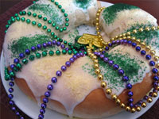

First Love: Comfort Food
New Orleans King CakeThis colorful Mardi Gras sweet treat can be found in bakeries all over New Orleans, but its roots lay in France and Spain. These countries brought the king cake, named for the Bible's three kings, to the Louisiana region in the mid-18th century. The cake itself varies depending on the baker, but it's traditionally twisted bread cake with some kind of colorful, sugary icing. Sometimes, the sticky bread contains a filling, such as chocolate, fresh fruit or cream cheese. However, some more daring bakeries have included eccentric fillings made from crawfish. What makes the king cake truly unique is the little plastic baby baked inside. The tradition started in France, with an uncooked bean being placed inside. It evolved into tiny trinkets, and in the case of Mardi Gras, a small plastic baby. Whoever gets the piece the baby is in is the king or queen for a day and must provide the cake at the following year's celebration. Click here for the recipe! |
 |